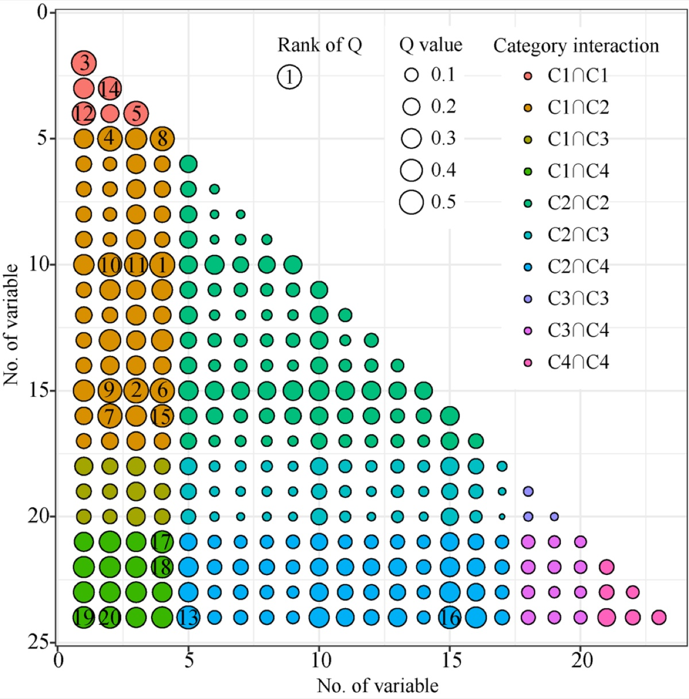
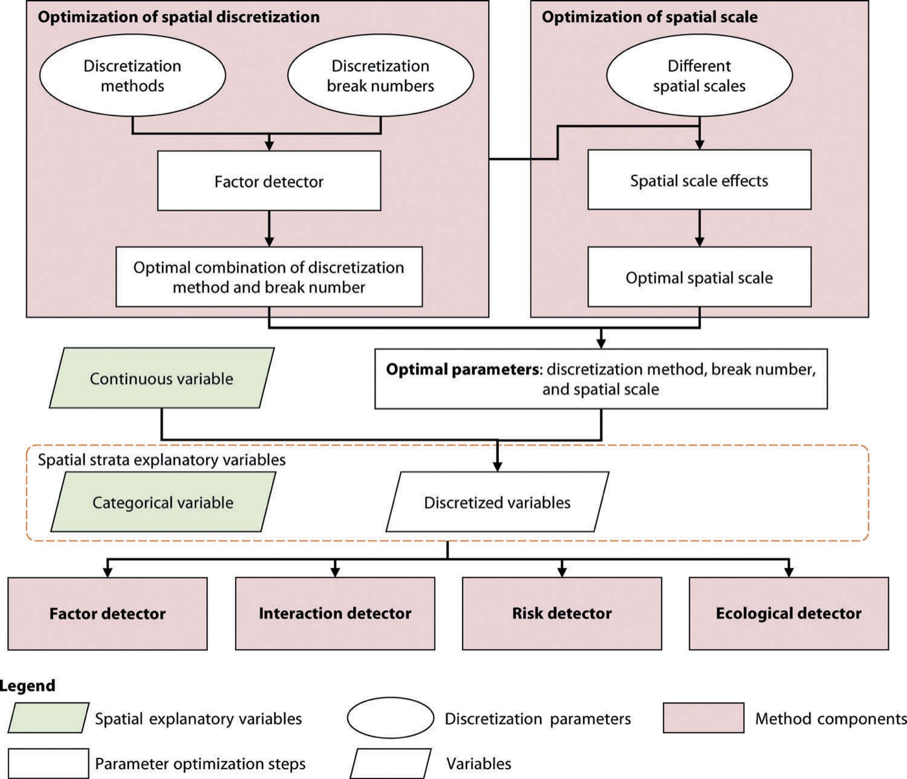
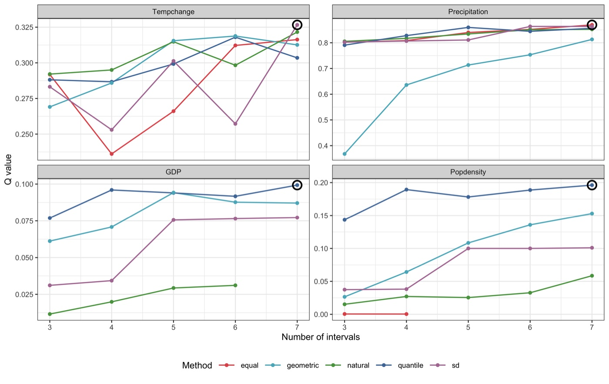
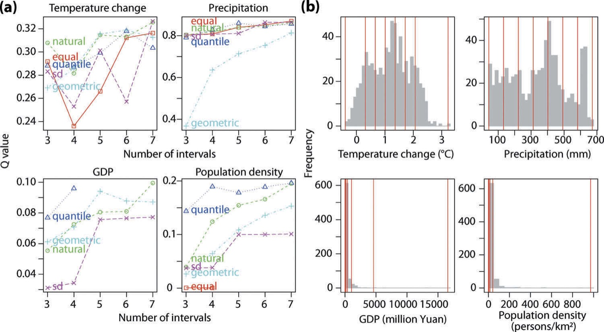
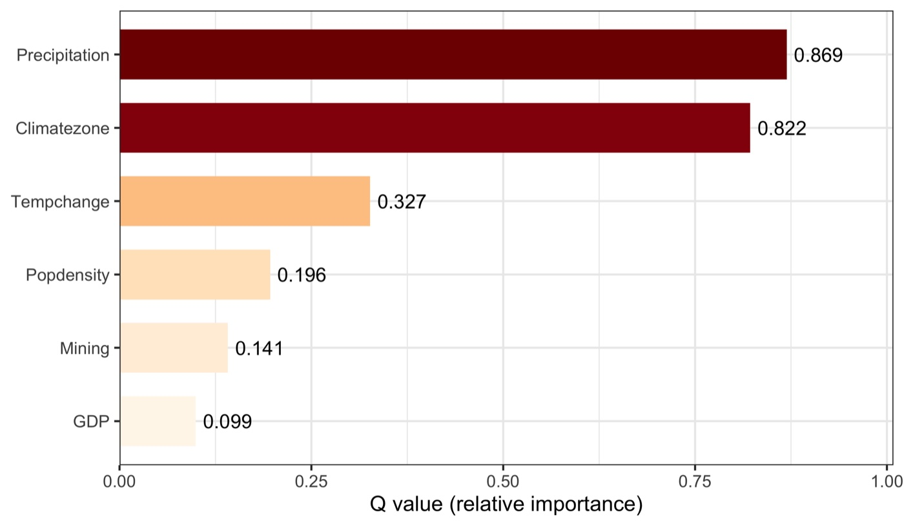
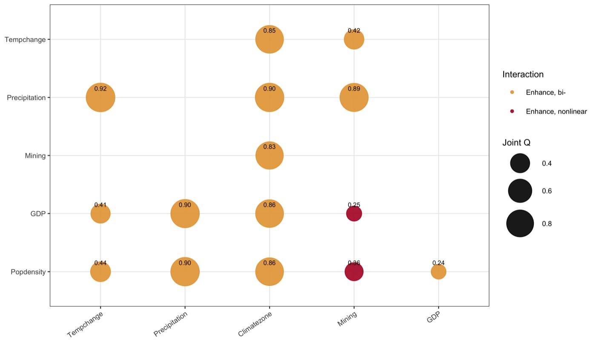
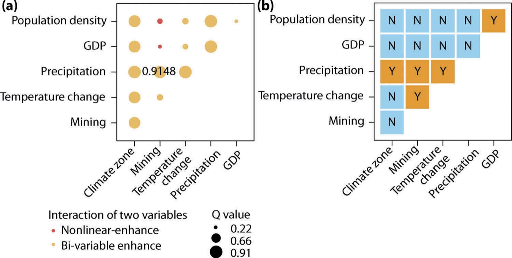
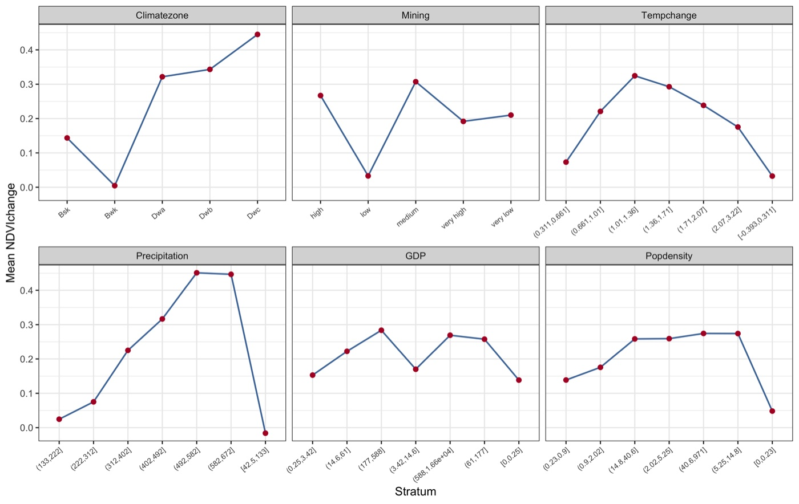
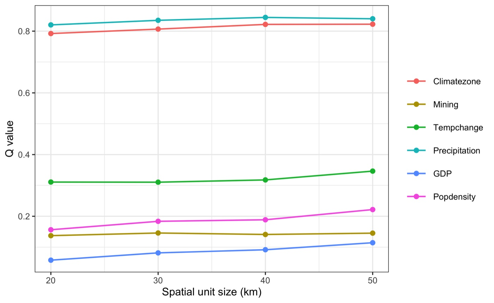
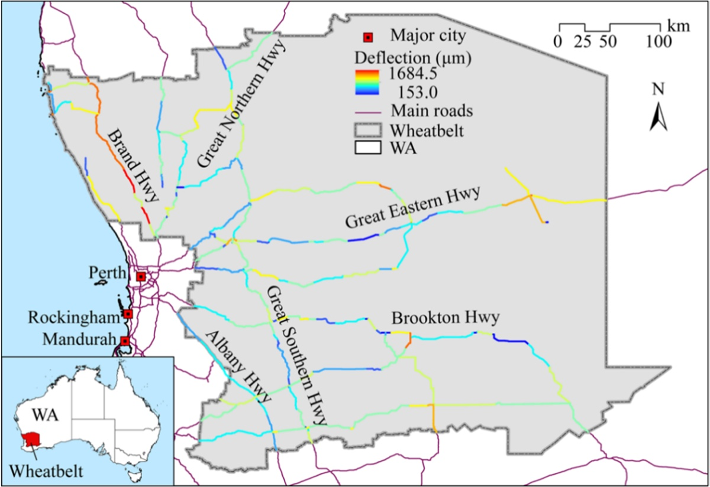

Reproducing the Optimal Parameters-based Geographical Detector (OPGD)
A complete walkthrough of the OPGD model — the geographical
detector of spatial stratified heterogeneity, enhanced by searching the optimal spatial
discretisation and spatial scale for every continuous variable — from raw data to manuscript,
built on the CRAN GD package.
R/ pipeline scripts · config/project-config.R ·
tests/ verification · run-all.R — the demo data ship inside the
GD package, so unzip and run Rscript run-all.R test from the
OPGD/ folder root.
Upload a CSV (ID, y, and explanatory variables), press Compute, and get
the full gdm() output — optimal discretisation, factor, interaction, risk and
ecological detectors — as figures and tables with CSV/PNG/PDF downloads. Computed by the
CRAN GD package itself (WebAssembly R); all computation stays on your device.
To cite the OPGD model and its R packages and codes in publications, please use:
Song Y, Wang J, Ge Y, Xu C (2020). An optimal parameters-based
geographical detector model enhances geographic characteristics of explanatory variables for
spatial heterogeneity analysis. GIScience & Remote Sensing 57(5):593–610.
doi ·
PDF
Wang J-F, Li X-H, Christakos G, et al. (2010). Geographical
detectors-based health risk assessment and its application in the neural tube defects study of
the Heshun region, China. IJGIS 24(1):107–127.
doi
Song Y, Wright G, Wu P, et al. (2018). Segment-based spatial analysis for
assessing road infrastructure performance using monitoring observations and remote sensing
data. Remote Sensing 10(11):1696.
doi
Reference implementation: the GD R
package (CRAN) and its
vignette.

1 Method Overview & Reproduction Scope
1.1 Core Idea
The geographical detector measures spatial stratified heterogeneity (SSH): the
tendency for a response to be more alike within strata of an explanatory variable than between
them. Its core statistic, the Q value (q = 1 − SSW/SST), reads as the
share of the response's variance that a variable's spatial strata explain — 0 when the strata
carry no signal, 1 when they explain it entirely. Unlike a regression coefficient it needs no
linearity assumption and works on categorical and stratified continuous variables alike.
The catch is that a continuous variable has no natural strata: it must be
discretised first, and the Q value depends heavily on how — which breaking method
(equal, natural, quantile, geometric, standard-deviation) and how many intervals. Choose badly
and a genuinely important variable looks weak. The optimal parameters-based geographical
detector (OPGD) removes that arbitrariness: for every continuous variable it searches the
grid of (method × break-number) and keeps the combination that maximises the Q value,
then runs the detectors on those optimal strata.
Research problem: the plain geographical detector's result is an artefact of the
analyst's discretisation choice, so two studies of the same data can disagree on which
driver matters.
One-line contribution: OPGD selects the discretisation (and the spatial unit size)
that best expresses each variable's spatial stratified heterogeneity, making the four
detectors — factor, interaction, risk and ecological — reproducible and comparable.
Why it matters: a single optimised run answers four questions at once — which
variables drive the response, which pairs interact, which zones are high-risk, and whether
two drivers differ significantly — with no model tuning and no linearity assumption.
◆Reader anchor
The Q value only means something once each continuous variable is discretised the way that
shows its spatial signal most clearly. OPGD makes that choice by search, not by habit → the
factor detector then ranks drivers, the interaction detector finds pairs that amplify each
other, the risk detector names the high/low strata, and the ecological detector says which
drivers differ. Everything on this page serves that line.
✓What you need
R 4.1+ with two packages (GD, ggplot2), the folder from the
download button above, and about five minutes. The demo data ship inside GD —
no external download, no API keys. The full pipeline runs in ~2–3 seconds.
1.2 Method Logic
OPGD wraps the classical geographical detector (Wang et al. 2010) in two parameter
optimisations — spatial discretisation and spatial scale — and then exposes the four detectors.
It sits between the original detector and the localised methods that later build on it:
GD 2010geographical detector: global q per stratified variable Wang et al., IJGIS
→
OPGD 2020optimises discretisation & spatial scale, then runs the four detectors Song et al., GISci RS · PDF
LISP 2024makes stratified power local via semivariogram extents Hu et al., IJGIS · PDF
→
LPI 2026local stratified power over variables and their patterns; has its own tutorial LISP tutorial · PDF
The schematic below is the whole method on one page:
Published reference · OPGD

OPGD paper Fig. 2 — the model. Left: for each continuous variable, a grid of
discretisation methods × break numbers is scored by the factor detector and the highest-Q
combination is kept. Right: the same idea over spatial unit sizes. The optimal parameters feed
the discretised variables into the four detectors (factor, interaction, risk, ecological).
Song, Wang, Ge & Xu (2020), GIScience & Remote Sensing.
Key concepts and equations
Q value — the factor detector (Wang et al. 2010):
q = 1 − SSW / SST = 1 − (1/Nσ²) Σh Nhσh²
SST is the total variance of the response; SSW is the variance that remains within the strata
of a variable. q ∈ [0,1] is the share the strata explain, with an F/non-central test
of significance — Wang et al. (2010)
doi.
Optimal discretisation (the OPGD enhancement): for a continuous variable, compute q
for every (method, n-intervals) pair over the methods {equal, natural, quantile,
geometric, sd} and a break-number range, and keep the pair with the highest q. The variable
is then cut at those breaks before any detector runs — Song et al. (2020)
PDF.
Optimal spatial scale (SESU): re-run the model across a series of spatial unit sizes
and adopt the scale where the Q values stabilise, so the finding is not an artefact of the
grid resolution.
The four detectors, all off the same optimal strata: the factor detector
ranks variables by q; the interaction detector compares q(x₁∩x₂) against q(x₁) and
q(x₂) and types the pair into five classes; the risk detector t-tests the response
means between strata to name high/low zones; the ecological detector F-tests whether
two variables differ significantly in their impact.
The whole analysis in one call
The GD package's gdm() function does everything above in a single
call — optimal discretisation of the continuous variables, then all four detectors, plus the
plots. The block below is the vignette's quick-start (GD vignette, §1.3);
paste it into R to run the entire NDVI analysis at once. The rest of this page unpacks that one
call into transparent, config-driven steps that write one CSV per detector.
R — gdm(): the entire OPGD analysis + visualisation in one call
## install and library the package
install.packages("GD", dep = TRUE)
library(GD)
## Example 1 — NDVI: ndvi_40
## optional discretisation methods: equal, natural, quantile, geometric, sd, manual
discmethod <- c("equal", "natural", "quantile")
discitv <- c(4:6)
## "gdm" runs optimal discretisation + all four detectors + plots in one step.
## Here Climatezone and Mining are categorical; Tempchange and GDP are continuous.
ndvigdm <- gdm(NDVIchange ~ Climatezone + Mining + Tempchange + GDP,
continuous_variable = c("Tempchange", "GDP"),
data = ndvi_40,
discmethod = discmethod, discitv = discitv) # ~3 s
ndvigdm # printed summary: factor, interaction, risk, ecological
plot(ndvigdm) # all detector figures
◆One call vs the step-by-step pipeline
gdm() is the fastest way to get every result; this tutorial's numbered
scripts (§3) call the same GD functions one detector at a time so each result lands in its
own CSV — the transparency a manuscript's reproducibility section needs. Same method, same
numbers; choose the one call to explore, the steps to publish.
1.3 Reproduction Scope
Everything tagged Demo run on this page regenerates from the scripts in this folder;
everything tagged Published reference is a static comparison image from the source
article. The demo runs end to end with R 4.6.0 and
GD 10.9, and the built-in test reproduces the published NDVI ranking (Song
et al. 2020): Precipitation and Climate zone are the dominant drivers of vegetation
change.
Item
Demo template
Published reference
Data
the GD package's ndvi_40 (713 grid cells, Inner Mongolia
NDVI change; 2 categorical + 4 continuous variables) and the multi-scale
ndvi_20…50 series
Song et al. (2020): the same NDVI case at 10 km cells, plus an H1N1 and a
road-damage case
Tables
results/optimal-discretization.csv, factor-detector.csv,
interaction-detector.csv, … regenerated by the scripts
the paper's factor/interaction/ecological results, whose ranking
run-all.R test reproduces
Figures
fig01–fig05 (optimisation, factor, interaction, risk, SESU) from R/p01–p05
OPGD paper Figs 2, 5, 8 embedded as static reference images
What the template regenerates versus what is shown as published reference.
Published applications of the OPGD model
Application
Spatial unit
Response
Explanatory variables
Status
Vegetation (NDVI) change, Inner Mongolia (Song et al. 2020 — this demo's data)
Grid cell (10–50 km)
NDVI change 2010–2014
Climate zone, mining, temperature, precipitation, GDP, population
Published (GISci RS)
Road pavement deformation, Western Australia (Song et al. 2018 — the GD road case)
1 km road segment
Deflection / damage
24 climate, traffic and road-characteristic variables
Published (Remote Sensing)
H1N1 flu incidence (GD built-in h1n1_*)
Region
Incidence
10 environmental / socioeconomic variables
Built-in alternative case
The OPGD model spans environment, infrastructure and public health; the NDVI case
is reproduced here without any external data.
How to use this page
To reproduce the demo: this folder ships the R scripts (R/), the
configuration (config/project-config.R) and the tests (tests/);
the data live inside the GD package. Run Rscript run-all.R test,
then Rscript run-all.R; every output on this page regenerates.
To apply OPGD to your own problem: read §2.3 (data contract), point
INPUT_FILE at your CSV and name the response, categorical and continuous
columns in the §2.2 config, then run the same scripts (§4.1).
To write the paper: §4.2 maps every result file to a manuscript element and gives
the section skeleton the published applications share.
2 Setup, Structure & Data Contract
2.1 Environment & Dependencies
The pipeline is pure R and wraps the CRAN GD package — the reference
implementation of the geographical detector and OPGD. Two packages cover everything; the demo
datasets ship inside GD itself, so a fresh machine needs no external download.
R console
# Required — the OPGD reference implementation (ships the demo data)
install.packages("GD")
# Required for the figures
install.packages("ggplot2")
Package
Role in the pipeline
Required?
GD
optidisc() optimal discretisation; gd(), gdinteract(), gdrisk(), riskmean(), gdeco() the four detectors; gdm() one-call wrapper; the ndvi_* / h1n1_* demo data
yes
ggplot2
the five demo figures (R/p01–p05)
figures only
The whole method lives in one package; the environment is in
env/session-info.txt.
✓Why the GD package
Rather than re-implement the geographical detector, this template calls the authors' own
CRAN package, so the numbers are the reference numbers by construction. The tutorial adds a
config-driven, step-by-step wrapper around it that writes one CSV per detector — the
transparency a manuscript's reproducibility section needs.
2.2 Project Structure & Configuration
One entry script drives everything: run-all.R runs the seven pipeline steps, the
five figure scripts, or the two tests, and every step writes to data/derived/,
results/, tables/ or figs/. Each step reads what the
previous one wrote, so a single step can be re-run after a config change without repeating the
whole pipeline.
folder tree
OPGD/
├── opgd.html # this guide
├── run-all.R # entry point: full run, single steps, figures, test
├── assets/ # figures shown in this guide (web copies)
├── config/project-config.R # the ONLY file to edit for a new domain
├── R/
│ ├── 00-config.R, 01-helpers.R # library layer: paths, IO, GD guard
│ ├── 10-prepare-data.R # load the analysis table, report roles
│ ├── 20-optimal-discretization.R# the OPGD enhancement (optidisc)
│ ├── 30-factor-detector.R # relative importance (gd)
│ ├── 40-interaction-detector.R # pairwise interaction (gdinteract)
│ ├── 50-risk-detector.R # sub-region means + t-test (gdrisk, riskmean)
│ ├── 60-ecological-detector.R # F-test between variables (gdeco)
│ ├── 70-sesu-scale.R # spatial-scale effects (gdm over ndvi_*)
│ ├── 90-tables.R # LaTeX tables + session info
│ └── p01 … p05 # figure scripts
├── data/reference/ # provenance of the built-in GD data
├── tests/ # test-01 reproduces the paper; test-02 properties
├── env/ # requirements.md, session-info.txt
├── results/ tables/ figs/ # generated output, never hand-edited
Main configuration file
config/project-config.R (key lines)
DATASET <- "ndvi_40" # a GD built-in table (or set INPUT_FILE)
INPUT_FILE <- NULL # e.g. "data/raw/your.csv" to use your own data
RESPONSE <- "NDVIchange" # the dependent variable
CATEGORICAL <- c("Climatezone", "Mining") # already-discrete explanatory vars
CONTINUOUS <- c("Tempchange", "Precipitation",
"GDP", "Popdensity") # these get optimal discretisation
DISC_METHODS <- c("equal","natural","quantile","geometric","sd")
DISC_INTERVALS <- 3:7 # break numbers to search
SESU_DATASETS <- c("ndvi_20","ndvi_30","ndvi_40","ndvi_50") # spatial-scale series
SESU_SIZES <- c(20, 30, 40, 50)
✓Single adaptation point
The config is the only file you edit to port the pipeline: name your response and which
columns are categorical versus continuous, and choose the discretisation search grid. No R
script hard-codes a variable name. When writing the manuscript, quote the search grid and the
chosen breaks from this file, never from memory.
Key parameters and where they come from
Parameter
Default
Origin / rationale
DISC_METHODS
5 methods
the supervised + unsupervised breaks of Song et al. (2020): equal, natural (Jenks), quantile, geometric, standard-deviation
DISC_INTERVALS
3:7
break-number range searched per method; wider covers more choices at the cost of runtime
CATEGORICAL / CONTINUOUS
2 / 4
categorical variables are used as-is; only continuous ones are optimally discretised
SESU_SIZES
20–50 km
spatial unit sizes re-run to read where the Q values stabilise (the optimal scale)
Free parameters, their defaults, and the published rules they follow.
2.3 Data Contract
The pipeline consumes one table, one row per spatial unit: a numeric response, a set of
categorical explanatory variables, and a set of continuous ones. Units can be anything
area-referenced — grid cells (this demo), road segments, counties, regions.
Column
Config key
Type
Meaning
Required?
response
RESPONSE
numeric
the dependent variable (e.g. NDVIchange)
yes
categorical
CATEGORICAL
factor / integer
already-discrete drivers, used as strata directly
≥ 0
continuous
CONTINUOUS
numeric
drivers that OPGD discretises optimally before detecting
≥ 1
Required schema. Column names are free — declared in the config, not hard-coded.
The geographical detector needs no coordinates: strata come from the variables, not from
space directly.
Example analysis-ready table
NDVIchange
Climatezone
Mining
Tempchange
Precipitation
GDP
Popdensity
0.116
Bwk
low
0.256
236.5
12.55
1.45
0.018
Bwk
low
0.273
213.6
2.69
0.80
0.138
Bsk
low
0.302
448.9
20.06
11.49
Representative rows of ndvi_40 (713 total). Climatezone
and Mining are categorical; the other four are continuous and get optimal
discretisation in Step 2. Your own data takes exactly this shape.
!Continuous vs categorical is your call, and it matters
List a variable under CONTINUOUS and OPGD searches for its best strata; list
it under CATEGORICAL and its existing values become the strata unchanged. Put an
ordinal code (a climate zone, a soil class) in the wrong list and you either discretise a
label that should be kept, or freeze a continuous gradient at whatever coding it arrived in.
A related trap: a near-constant or heavily skewed continuous variable (like GDP
here) can yield NA Q at fine break numbers — the search simply skips those and
keeps a valid combination.
3 Reproduction Pipeline, Results & Validation
3.1 Pipeline Execution
Seven pipeline steps, five figure scripts and two verification tests run from one entry point.
Each step writes to results/, tables/, figs/ or
data/derived/ and reads what the previous step wrote, so any step can be re-run in
isolation after a config change.
Full run
Rscript run-all.R (~2–3 s)
Verification
Rscript run-all.R test — do this first
Output folders
results/ tables/ figs/ data/derived/
terminal
cd OPGD # this folder
Rscript run-all.R test # 1. verify the code reproduces the published ranking
Rscript run-all.R # 2. full pipeline on the built-in ndvi_40 data
Rscript run-all.R 20 30 # re-run single steps (10 20 30 40 50 60 70 90)
Rscript run-all.R figures # only the figure scripts
Project : opgd-demo
Domain : vegetation change (NDVI)
== Step 1/7 Prepare data ======================================
713 rows, 7 columns; 2 categorical + 4 continuous
== Step 2/7 Optimal parameter discretisation ==================
Precipitation best: equal x 7 intervals -> Q = 0.8694
Tempchange best: sd x 7 intervals -> Q = 0.3266
== Step 3/7 Factor detector ===================================
dominant variable: Precipitation (Q = 0.869); weakest: GDP (Q = 0.099)
== Step 4/7 Interaction detector ==============================
strongest interaction: Tempchange n Precipitation -> Q = 0.916 (Enhance, bi-)
== Step 5/7 Risk detector =====================================
104 stratum pairs tested; 82 significantly different (t-test)
== Step 6/7 Ecological detector ===============================
14 of 15 variable pairs differ significantly in their impact
== Step 7/7 Spatial-scale effects (SESU) ======================
unit size 40: mean Q = 0.401 across 6 variables
Finished in 2.3 s
3.2 Reproduce the Published Values
Before trusting any number on your own data, confirm the code reproduces the published method.
run-all.R test runs the OPGD optimisation and factor detector on the paper's own
ndvi_40 data and checks the published ranking — Precipitation and Climate zone are
the dominant drivers of NDVI change (Song et al. 2020).
== test-01 Reproduce Song et al. (2020) ndvi_40 factor detector ==========
Precipitation dominates (Q > 0.80) pass
Climate zone strong (Q > 0.80) pass
Precipitation ranks above Climate zone pass
GDP is the weakest driver (Q < 0.15) pass
every Q is a valid fraction in [0,1] pass
Q: Precip=0.869 Climate=0.822 Temp=0.327 Pop=0.196 GDP=0.099
PASS — the template reproduces the published OPGD ranking
== test-02 Geographical-detector properties ============================
perfectly separated strata give Q near 1 pass
random strata give Q near 0 pass
Q is invariant to a linear rescale of the response pass
...
6 passed, 0 failed
!The Q value is only reproducible once discretisation is fixed
Run the plain geographical detector with an arbitrary binning and Precipitation's Q can
land anywhere from 0.37 (geometric, 3 bins) to 0.87 (equal, 7 bins) — see the spread in the
optimisation figure below. That is exactly the arbitrariness OPGD removes: the test locks the
optimised value, so editing the search grid or the detector code and re-running
immediately shows whether the ranking still holds.
✓Checkpoint
run-all.R test prints PASS with 6 property checks and the published
NDVI ranking reproduced. The implementation is the reference method — proceed to your own
analysis.
3.3 Core Analytical Steps
Seven stages, each with the same anatomy: purpose → code → output → result →
how to read it. Steps are numbered 1–7 on this page and the script files share those
numbers (Step 2 runs R/20-optimal-discretization.R, and so on).
Step 1
Prepare data — load the table and label the variable roles
What this step does
Loads the analysis table (a built-in GD dataset, or your CSV via
INPUT_FILE), keeps the response plus the configured categorical and continuous
variables, and records each column's role and range. Everything downstream reads only this
derived table.
In Song et al. (2020) this is the NDVI case: annual mean NDVI change (2010–2014) over
Inner Mongolia at 10 km cells, with climate, mining and socioeconomic drivers. The
built-in ndvi_40 is the same case at 40 km cells
(PDF).
◆How to read this result
The split between categorical and continuous is the one decision that shapes
everything. Only continuous variables enter the Step 2 search; categorical
ones (climate zone, mining level) are used as strata as they stand.
No coordinates needed. The geographical detector reads spatial pattern
through the strata of the variables, not through a distance matrix — so any
area-referenced table fits, with or without lon/lat.
✓Checkpoint
results/variable-summary.csv lists 7 columns with the right role
(1 response, 2 categorical, 4 continuous) before you move on.
Step 2 · the OPGD enhancement
Optimal discretisation — the best strata for each continuous variable
What this step does
For every continuous variable it computes the factor-detector Q across the grid of five
methods × break numbers 3–7, keeps the combination with the highest Q, and cuts the variable
at those breaks. This is the step that makes the whole analysis reproducible — the discretised
table it writes feeds every detector.
Code
R/20-optimal-discretization.R — the search (via GD::optidisc)
for (v in CONTINUOUS) {
od <- optidisc(as.formula(paste(RESPONSE, "~", v)), data = d,
discmethod = DISC_METHODS, discitv = DISC_INTERVALS)[[1]]
bestq <- max(od$qv.matrix, na.rm = TRUE) # highest Q over method x n-intervals
d[[v]] <- cut(d[[v]], unique(od$itv), include.lowest = TRUE) # optimal strata
}
terminal
Rscript run-all.R 20
Example output
Variable
Best method
Intervals
Q value
Precipitation
equal
7
0.869
Tempchange
sd
7
0.327
Popdensity
quantile
7
0.196
GDP
quantile
7
0.099
results/optimal-discretization.csv — the chosen method, break
number and resulting Q for each continuous variable.
Demo run

fig01 — Q value against the number of intervals, one line per method, faceted
by variable. The circled point is the maximum (the chosen combination). Precipitation is
high and stable; GDP stays low whatever the binning.Published reference · OPGD

OPGD paper Fig. 5 — the same optimisation panel in Song et al. (2020):
(a) Q against intervals per method, (b) the histograms with the optimal breaks. The demo
reproduces the shape, including geometric's slow climb on Precipitation.
!The choice is not neutral — report it
Precipitation's Q ranges from 0.37 (geometric, 3 intervals) to 0.87 (equal, 7) across
the grid — a factor of more than two, from the binning alone. State the search grid and
the chosen method/breaks in the Methods section; that is what makes a geographical-detector
result comparable across studies.
◆How to read this result
The optimal method differs per variable. Precipitation prefers equal breaks,
temperature standard-deviation breaks, the skewed GDP and population quantile breaks
— one global rule would have mis-scored at least one of them.
Higher break numbers usually help, but not always. Most curves rise toward
7 intervals; where a curve dips (temperature under equal breaks at n=4) the search
simply avoids it. Cap the range by sample size — too many strata leave too few
observations each.
A flat, low curve is a real finding. GDP never exceeds Q≈0.10 under any
binning: it is genuinely a weak driver of NDVI change here, not a victim of bad
discretisation.
✓Checkpoint
results/optimal-discretization.csv holds one row per continuous variable,
and data/derived/discretized-data.csv (713 rows) carries the optimal strata
for Steps 3–6.
Step 3 · the core result
Factor detector — relative importance of every variable
What this step does
Runs the factor detector on the optimally discretised table: the Q value of every variable,
with a significance test, ranked. This is the headline of most geographical-detector papers —
which drivers explain the spatial pattern of the response.
Code
R/30-factor-detector.R — via GD::gd
dcz <- read.csv("data/derived/discretized-data.csv") # optimal strata from Step 2
g <- gd(NDVIchange ~ ., data = dcz) # factor detector
g$Factor # variable, qv, sig
terminal
Rscript run-all.R 30
Example output
Demo run

fig02 — relative importance (Q) per variable. Precipitation (0.869) and
Climate zone (0.822) dominate; GDP (0.099) is weakest.
Variable
Q value
Significance (p)
Rank
Precipitation
0.869
2.6e−10
1
Climatezone
0.822
7.3e−10
2
Tempchange
0.327
3.1e−10
3
Popdensity
0.196
2.2e−10
4
Mining
0.141
6.7e−10
5
GDP
0.099
9.6e−10
6
results/factor-detector.csv — every variable is significant
(p < 1e-9); the Q value is what separates them.
Paper reference
Song et al. (2020) report Precipitation and Climate zone as the leading drivers of
NDVI change in this region, with the socioeconomic variables (GDP, population) weak — the
ranking this demo reproduces (PDF).
◆How to read this result
Q is a share of variance explained, not a correlation. Precipitation's 0.869
means its (optimal) strata account for 87% of the spatial stratified heterogeneity
of NDVI change — no sign, no linearity, just explained structure.
Significance and magnitude are different questions. Every variable here is
statistically significant, yet GDP's Q is only 0.10. A significant but small Q means
"real but minor"; read the number, not just the star.
Climate leads, economy trails — the physical reading. That precipitation and
climate zone tower over GDP and population says vegetation change in this arid region
is climate-driven; the socioeconomic drivers matter only locally (they resurface in
the interaction detector, Step 4).
✓Checkpoint
results/factor-detector.csv holds 6 ranked rows; the console names
Precipitation as dominant (Q = 0.869) and GDP as weakest (0.099).
Step 4
Interaction detector — which pairs of variables amplify each other
What this step does
For every pair it computes the joint Q of the two variables overlaid and compares it with
the two single Q values, classifying the pair into one of five types (bi-enhance,
nonlinear-enhance, uni-weaken, nonlinear-weaken, independent). Interactions routinely exceed
the strongest single driver.
Code
terminal
Rscript run-all.R 40
Example output
Demo run

fig03 — bubble size is the joint Q of a pair; colour is the interaction type.
Precipitation ∩ Temperature (0.92) is the strongest; the two Mining pairs with GDP /
population (red) are nonlinear-enhance.Published reference · OPGD

OPGD paper Fig. 8 — (a) interaction bubble matrix, (b) ecological detector.
The demo reproduces the pattern: Precipitation ∩ Temperature strongest (paper labels
0.9148; demo 0.916), and mining pairs turning nonlinear-enhance.
Published reference · road caseSong et al. (2018) Fig. 8 — the same interaction bubble matrix at scale:
the pavement-deformation case runs the interaction detector over 23 variables, sized by
joint Q, ranked, and coloured by which of four category groups (C1–C4) the two variables
belong to. It shows the demo's small 15-pair matrix is exactly how a full geographical-detector
study reports interactions.
Remote Sensing 10(11):1696.
◆How to read this result
Every pair enhances — the general rule of this method. The joint Q of two
variables is almost always higher than either alone, so a pair explains more than a
sum of parts would suggest. The question is how, not whether.
Bi-enhance vs nonlinear-enhance is the key distinction. 13 pairs are
bi-enhance (joint Q above both singles but below their sum); two — Mining ∩ GDP
(0.248) and Mining ∩ Population (0.359) — are nonlinear-enhance (joint above the
sum), meaning mining's effect on NDVI only emerges alongside the socioeconomic
variables.
Weak singles can matter jointly. GDP alone is the weakest driver (0.099), yet
Precipitation ∩ GDP reaches 0.900 — the socioeconomic signal is real but conditional
on climate, exactly the kind of finding a single-variable ranking hides.
✓Checkpoint
results/interaction-detector.csv holds all 15 pairs; the strongest is
Temperature ∩ Precipitation (Q = 0.916), and 2 of 15 are nonlinear-enhance.
Step 5
Risk detector — which zones are high vs low, and is the difference real
What this step does
riskmean() gives the mean response within each stratum of every variable;
gdrisk() t-tests every pair of strata and flags the significant differences.
Together they turn a Q value into an actionable map of where the response is high.
Code
terminal
Rscript run-all.R 50
Example output
Demo run

fig04 — mean NDVI change per stratum, one panel per variable. Climate zone
rises from Bwk (0.005) to Dwc (0.445); precipitation rises with rainfall then plateaus
around 0.45; the socioeconomic variables are flatter.
== Step 5/7 Risk detector =====================================
wrote results/risk-means.csv (38 rows)
wrote results/risk-detector.csv (104 rows)
104 stratum pairs tested; 82 significantly different (t-test)
◆How to read this result
Read the direction, not just the magnitude. Climate zone's Q says it matters;
the risk means say how — the humid Dwc zone has the highest NDVI gain (0.445),
the arid Bwk the lowest (0.005). That ordering is the actionable output.
The plateau is a signal. NDVI gain rises with precipitation up to ~500 mm
then stops climbing — beyond that, water stops being the limiting factor. A monotone
Q value cannot show this; the risk means can.
Significance guards against reading noise. 82 of 104 stratum pairs differ
significantly; the 22 that do not (mostly among the socioeconomic strata) are
differences you should not report as real.
✓Checkpoint
results/risk-means.csv (38 stratum means) and
results/risk-detector.csv (104 t-tests) are written; 82 pairs are
significant.
Step 6
Ecological detector — do two variables differ significantly in impact
What this step does
An F-test between every pair of variables asks whether their contributions to spatial
stratified heterogeneity differ significantly (Y) or are statistically indistinguishable (N).
It turns the factor-detector ranking into pairwise significance.
Code
terminal
Rscript run-all.R 60
Example output
== Step 6/7 Ecological detector ===============================
wrote results/ecological-detector.csv (15 rows)
14 of 15 variable pairs differ significantly in their impact
The paper's Fig. 8b (shown beside Step 4) is the published version of this Y/N matrix. The
single N in the demo is Climate zone vs Precipitation — the two dominant drivers are
statistically indistinguishable in impact, while every other pair differs.
◆How to read this result
The one "N" is the most informative cell. Climate zone and Precipitation both
score Q≈0.82–0.87 and the F-test cannot separate them — they are co-dominant, and a
paper should say so rather than crown a single winner on a 0.05 Q gap.
Everything else is "Y". The dominant drivers are significantly stronger than
the socioeconomic ones, so the climate-over-economy reading of Step 3 is not an
artefact of where the ranking happened to fall.
✓Checkpoint
results/ecological-detector.csv holds 15 pairs; exactly one (Climate zone
vs Precipitation) is not significant.
Step 7
Spatial scale (SESU) — is the result robust to the unit size
What this step does
Re-runs the model on the same case aggregated to a series of spatial unit sizes
(20–50 km, the built-in ndvi_* series) and reads where the Q values
stabilise. The scale where the curves flatten is the recommended analysis unit.
Code
terminal
Rscript run-all.R 70
Example output
Demo run

fig05 — Q value against spatial unit size, one line per variable. The rankings
are stable across scales; Precipitation and Climate zone stay on top and the curves flatten
from ~40 km, the recommended unit.
◆How to read this result
Stability of the ranking is the robustness claim. The order of variables does
not change from 20 to 50 km, so the factor-detector conclusion is not an
artefact of one grid resolution — the reassurance a reviewer asks for.
Slightly rising Q with coarser units is the modifiable areal unit effect.
Aggregation smooths within-unit variance, nudging Q up; report the scale you chose
and why, not just the single-scale number.
✓Checkpoint
results/sesu-scale.csv holds Q for 6 variables × 4 unit sizes; the mean Q
settles near 0.40 from 40 km.
3.4 Reading the Results Together
The four detectors are one story told from four angles: who matters (factor),
with whom (interaction), where (risk), and how confidently (ecological).
Read alone, each can mislead; read together, they are hard to argue with.
The demo finding
NDVI change in this arid
region is climate-driven: Precipitation (Q 0.869) and Climate zone (0.822) dominate and are
statistically co-dominant (ecological N), with a strong bi-enhance interaction
(0.90).
The hidden socioeconomic signal
GDP and
population are weak singles (0.099, 0.196) but their interactions with mining are
nonlinear-enhance — a conditional human effect the factor ranking alone would discard.
◆How to interpret — several angles
Mechanism (why OPGD changes the answer). The Q value is a function of the strata;
the plain detector lets the analyst pick them, so the "importance" of a variable is
partly a choice. Optimising the discretisation removes that degree of freedom, so the
ranking reflects the data, not the binning.
Decision angle (what to do with it). The factor detector chooses which
variables to keep; the risk detector says which zones to target; the interaction
detector warns which drivers must be modelled together. For a management map, the risk
means are the deliverable; for a causal argument, the ecological detector is.
What OPGD is not. It is not a predictive model and returns no coefficients
or forecasts — it quantifies and localises spatial stratified heterogeneity. Pair it
with a predictive method when you need a map of values, not a map of drivers.
Case reading. That climate co-dominates while the economy only enhances
conditionally is the substantive result — and it is stable across spatial scales
(Step 7), so it survives the reviewer's first question.
◆Reading order for your own run
1) results/optimal-discretization.csv — confirm each variable's search found a
valid, non-trivial Q. 2) results/factor-detector.csv — the ranking and its
significance. 3) results/ecological-detector.csv — which gaps in the ranking are
real. 4) results/interaction-detector.csv and risk-means.csv — the
pairs and zones that carry the story. 5) results/sesu-scale.csv — whether it
holds across scales.
4 Adaptation, Writing & Reproducibility
4.1 Port to Your Domain
The geographical detector moves between domains without touching the analytical scripts: the
config declares the table and the variable roles, and every detector is generic. The published
applications span the range:
Domain
Response
Spatial unit
Key adaptation
Vegetation change (Song et al. 2020)
NDVI change
Grid cell
4 continuous + 2 categorical drivers; the demo here
Road pavement deformation (Song et al. 2018)
Deflection / damage
1 km segment
24 variables; segment-length scale optimisation via SESU
H1N1 flu incidence (GD built-in)
Incidence
Region
environmental + socioeconomic drivers; set DATASET <- "h1n1_100"
Any area-referenced table with one response and a mix of categorical and
continuous drivers fits the data contract of §2.3.
Published reference · road case

Song et al. (2018) Fig. 1 — the road-deformation application: pavement
deflection across the Western Australia road network, analysed with the same OPGD detectors on
line-segment units. The GD package's road case comes from this study.
Remote Sensing 10(11):1696.
What to edit
config/project-config.R — point INPUT_FILE at your CSV (or name a
built-in DATASET), set RESPONSE, and split the drivers into
CATEGORICAL and CONTINUOUS. Choose the DISC_METHODS
and DISC_INTERVALS search grid. The single adaptation point of §2.2.
For spatial-scale optimisation, either supply your own multi-scale tables or set
RUN_SESU <- FALSE; SESU needs the aggregated series, which for a
custom INPUT_FILE you build yourself.
Nothing else: run Rscript run-all.R test once (a sanity check on the built-in
case), then Rscript run-all.R, and read
results/factor-detector.csv before drafting.
!Common pitfalls
Never compare Q values across different discretisation settings — finer strata mechanically
explain more variance, so a bigger Q from more intervals is not a stronger driver. Keep the
search grid fixed and let OPGD pick within it. Watch for NA Q on skewed
variables (the search skips those combinations, which is correct). And remember the detector
needs enough observations per stratum — with a small sample, cap DISC_INTERVALS
so strata do not empty out.
4.2 Write the Paper
The published OPGD applications share one manuscript architecture: a Methods section that
states the discretisation search grid and the four detectors, a Results section that mirrors the
pipeline steps, and every number pulled from a results/ file so nothing is retyped.
The download ships the code-and-config layer; the tables regenerate from
R/90-tables.R.
mirror the pipeline: optimisation → factor ranking → interactions → risk zones → ecological significance → scale robustness; one takeaway per subsection, every finding sentence carries a Q
Discussion
results/ecological-detector.csv, sesu-scale.csv
argue which drivers are co-dominant and which differ, and that the ranking is stable across scales; name the mechanism behind the leading interaction
Where each manuscript section draws its material from.
Manuscript skeleton (shared by the published applications)
manuscript outline
1 Introduction — spatial stratified heterogeneity; the discretisation
problem; the OPGD contribution (3 aims)
2 OPGD model — 2.1 Q value (factor detector; no case data)
2.2 Parameter optimisation (discretisation grid; SESU)
2.3 Interaction, risk and ecological detectors
3 Case & data — study area, response, explanatory variables, unit
4 Results — 4.1 optimal discretisation (Fig: Q vs intervals)
4.2 factor detector (ranking + significance)
4.3 interaction detector (bubble matrix)
4.4 risk detector (zone means)
4.5 ecological detector + scale robustness
5 Discussion — co-dominance, conditional drivers, mechanism, limits
6 Conclusions — 6-8 sentences mapping to the aims
Every manuscript element traces to one regenerable file.
4.3 Final Reproducibility Package
Everything an editor, reviewer, or reader needs sits in this folder; the three blocks below are
what a submission's data-and-code availability statement should point to.
Code
numbered scripts in R/ + run-all.R + config/project-config.R + tests/
Data
the GD built-in ndvi_* series (cited in data/reference/provenance.md) — or your CSV in data/raw/
Rscript run-all.R test passes — the code still reproduces the published
ranking and the detector properties.
Delete results/, tables/, figs/ and
data/derived/, re-run Rscript run-all.R — every number and
figure on this page regenerates (~2–3 s).
The discretisation search grid and the chosen method/breaks per variable are stated in
the Methods and match config/project-config.R.
Every finding sentence traces to a file in results/ or
tables/ — none retyped; Q values are reported with their significance.
env/session-info.txt (R and GD versions) is included in the
deposit.
◆Anticipate the reviewer
Have the answer pre-computed: Why this discretisation? → the optimisation figure and
optimal-discretization.csv. Is the top driver really stronger than the
second? → ecological-detector.csv (in this demo, Precipitation and Climate
zone are co-dominant — say so). Would a different unit size change the ranking? →
sesu-scale.csv. Do weak variables matter at all? → their interaction rows.
Wang J-F, Li X-H, Christakos G, et al. (2010). Geographical detectors-based health risk
assessment and its application in the neural tube defects study of the Heshun region, China.
IJGIS 24(1):107–127.
doi:10.1080/13658810802443457
Song Y, Wright G, Wu P, et al. (2018). Segment-based spatial analysis for assessing road
infrastructure performance using monitoring observations and remote sensing data.
Remote Sensing 10(11):1696.
doi:10.3390/rs10111696
(source of the GD road case and the study-area figure on this page)
Song Y, Wang J, Ge Y, Xu C (2020). An optimal parameters-based geographical detector model
enhances geographic characteristics of explanatory variables for spatial heterogeneity
analysis. GIScience & Remote Sensing 57(5):593–610.
doi:10.1080/15481603.2020.1760434
· PDF
(source of Figs 2, 5, 8 and the NDVI ranking reproduced on this page)